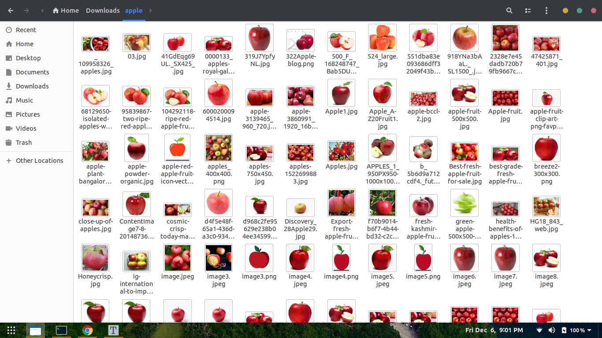

Custom Object Detection With Tensorflow Object Detection API
In this blog post, we are going to build a custom object detector using Tensorflow Object Detection API. I will choose the detection of apple fruit. But you can choose any images you want to detect your own custom objects.
I am assuming that you already know pretty basics of deep learning computer vision.
The steps needed are:
- Installation
- Gathering data
- Labeling data
- Generating TFRecords for training
- Configuring training
- Training model
- Exporting inference graph
- Testing object detector
Installation
Make sure you have Python 3.6 or higher version of it. I have done this in my Ubuntu 18.04 machine. If you are using Windows then the process is a little bit different.
If you already have pip then you are good to go. Otherwise, install pip3 by
sudo apt install python3-pip
1.1 Tensorflow
Then Install Tensorflow using the following command:
pip3 install tensorflow
If you have a GPU that you can use with Tensorflow:
pip install tensorflow-gpu
The remaining libraries can be installed on Ubuntu 18.04 using via apt-get:
1.2 Other dependencies
sudo apt-get install protobuf-compiler python3-pil python3-lxml python3-tk git
pip3 install pillow Cython lxml jupyter matplotlib contextlib2
pip3 install pycocotools
1.3 Clone the Tensorflow models repository
Clone the Tensorflow models repository:
git clone https://github.com/tensorflow/models.git
From this point on, this directory will be referred to as the models directory
1.4 Setting up the environment
After cloning the tf models repo, now go to research folder
cd models/research
Protobuf Compilation
The Tensorflow Object Detection API uses Protobufs to configure model and training parameters. Before the framework can be used, the Protobuf libraries must be compiled. This should be done by running the following command from the tensorflow/models/research/ directory:
# From tensorflow/models/research/
protoc object_detection/protos/*.proto --python_out=.
Add Libraries to PYTHONPATH
When running locally, the tensorflow/models/research/ and slim directories should be appended to PYTHONPATH. This can be done by running the following from tensorflow/models/research/:
# From tensorflow/models/research/
export PYTHONPATH=$PYTHONPATH:`pwd`:`pwd`/slim
Note: This command needs to run from every new terminal you start. If you wish to avoid running this manually, you can add it as a new line to the end of your ~/.bashrc file, replacing pwd with the absolute path of tensorflow/models/research on your system.
Object Detection Installation
# From tensorflow/models/research/
sudo python3 setup.py install
Testing the Installation
You can test that you have correctly installed the Tensorflow Object Detection API by running the following command:
python3 object_detection/builders/model_builder_test.py
If the result looks like the following, you’re ready to proceed to the next steps!
...............----------------------------------------------------------------------
Ran 15 tests in 0.120sOK
Gathering data
2.1 Open your google chrome browser and install an extension called Download All Images
2.2. Now search your desired image of choice in google images, in my case it’s “Apple”. Now click the “ “download all images” extension button which will be in your top-right side of browser. You will get a zip file containing your images. Then extract it.

Labelling data
Open up your terminal and install LabelImg by
pip3 install labelImg
LabelImg is a graphical image annotation tool.
After installing labelImg open it by typing
labelImg
in your terminal

And follow the above like what I am doing. And do this for all picture. What it’s doing is, it’s generating one xml file containing the object co-ordinates with it’s label.
I labelled around 100 images.
Now clone my repository
git clone https://github.com/TheCaffeineDev/Tensorflow-Object-Detection-API-With-Custom-Dataset.git
After cloning go inside the directory.
Your directory structure should look like this:
├── ...
├── data
├── images
│ ├── train
│ ├── test
├── utils
│ ├── label_map_util.py
│ ├── visualization_utils.py
├── generate_tfrecord.py
└── object-detection.pbtxt
└── transform_image_resolution.py
└── xml_csv.py
└── webcam_inference.py
Generating TFRecords for training
Now copy 70% of your image file to train folder images/train and rest 30% to your test folder.
With the images labelled, we need to create TFRecords that can be served as input data for training of the object detector. In order to create the TFRecords we will use two scripts from Dat Tran’s raccoon detector. Namely the xml_to_csv.py and generate_tfrecord.py files.
├── ...
├── data
├── images
│ ├── train
│ ├── image1.jpg
│ ├── image1.xml ..
│ ├── test
│ ├── image5.jpg
│ ├── image5.xml ..
├── generate_tfrecord.py
└── object-detection.pbtxt
└── transform_image_resolution.py
└── xml_csv.py
└── webcam_inference.py
Now in that folder, we can transform our XML files to train_label.csv and test_label.csv by opening the command line and typing:
python3 xml_to_csv.py
This creates two files in the data directory. One called test_labels.csv and another one called train_labels.csv.
Before we can transform the newly created files to TFRecords we need to change a few lines in the generate_tfrecords.py file.
From:
# TO-DO replace this with label map , replace with your own classes
def class_text_to_int(row_label):
if row_label == 'apple':
return 1
else:
return 0
If you have multiple classes then,
# TO-DO replace this with label map
def class_text_to_int(row_label):
if row_label == 'apple':
return 1
elif row_label == 'banana':
return 2
elif row_label == 'orange':
return 3
else:
return None
Now you can generate the TFRecords by typing:
python3 generate_tfrecord.py --csv_input=data/train_labels.csv --output_path=train.record --image_dir=images/train
python3 generate_tfrecord.py --csv_input=data/test_labels.csv --output_path=test.record --image_dir=images/test
These two commands generate a train.record and a test.record file which can be used to train our object detector.
Configuring training
The last thing we need to do before training is to create a label map and a training configuration file.
Creating a label map
The label map maps an id to a name. I have already created a label map file for my training. It looks like this:
Edit object-detection.pbtxt
item{
id:1
name:"apple"
}
If you are using multiple classes follow this pattern.
item {
id: 1
name: 'apple'
}
item {
id: 2
name: 'banana'
}
item {
id: 3
name: 'orange'
}
item {
id: 4
name: 'etc'
}
The id number of each item should match the id of specified in the generate_tfrecord.py file.
Creating a training configuration
We are going to train our model in Google Colab.
Follow this link below. I have documented it properly.
I am using “SSD_MOBILENET_V2” for training and with the batch size of 4. You can change the number of steps, which pre-trained model to use & the batch and size.
Then you need to run the cells below. There will be one Upload TF Record heading. Below that you need to upload your generated train.record, test.record & object-detection.pbtxt file.
Training model
Now after uploading all those file, run all the cells below. It will get trained.
Exporting inference graph
If you have run all the cells, then at last a file named frozen_inference_graph.pb file will get downloaded.
Testing Object Detector
Now copy that frozen_inference_graph.pb file into my GitHub cloned folder. Then you need to edit some things out in that webcam_inference.py to test your own object detector. Open that file and go through the code. I have mentioned the lines you need to change. You can pretty much do that.
If you have followed all of the above steps properly then you will be able to test your model via webcam.
Conclusion
The Tensorflow Object Detection API allows you to create your own object detector using transfer learning technique.
Here’s the link to grab the code.
If you have any questions, recommendations or critiques, I can be reached via Twitter or via my mail.
Thank you